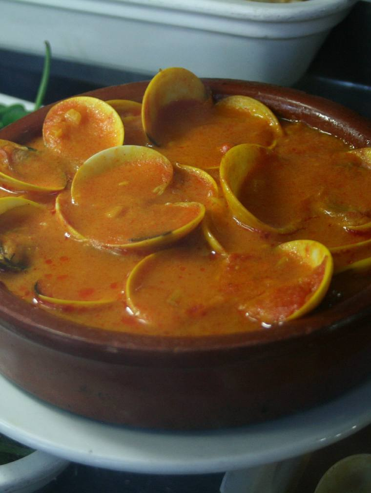

Entrées espagnoles et tapas

Entrées espagnoles et tapas
Almejas a la marinera
Palourdes à la marinière
Préparation : 20 min
Cuisson : 15 min
Ingrédients (pour 4 personnes)
- 500 g de palourdes
- 1 oignon
- 2 gousses d’ail
- ½ cuillère à soupe de chapelure
- 10 cl de vin blanc
- 5 cl d’huile d’olive
- 1 cuillère à soupe de persil haché
- ½ citron
- guindilla, sel
Quantités adaptées. Les temps de cuisson ne sont pas recalculés.
- Laver les palourdes, jeter celles qui restent ouvertes.
- Les faire ouvrir avec un peu d’eau, jeter les fermées, filtrer le jus.
- Revenir oignon et ail sans coloration, ajouter chapelure, jus, vin, citron, piment et persil.
- Cuire 2 minutes, saler, remettre les palourdes pour un bouillon et servir.
D’après Spain.info, office espagnol du tourisme. Traduit et reformulé.